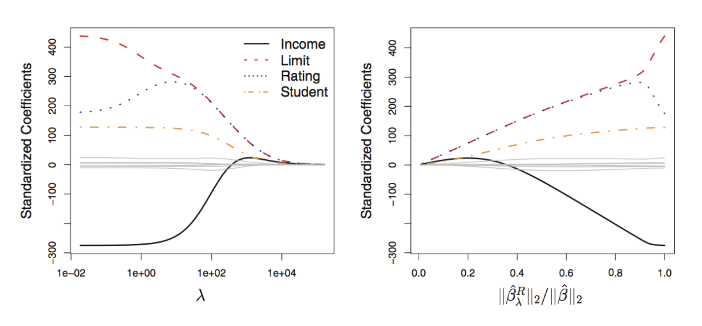
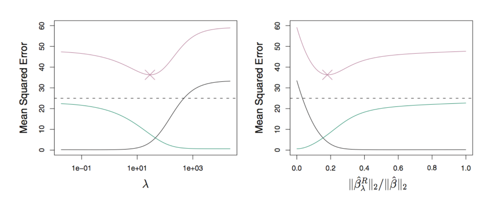
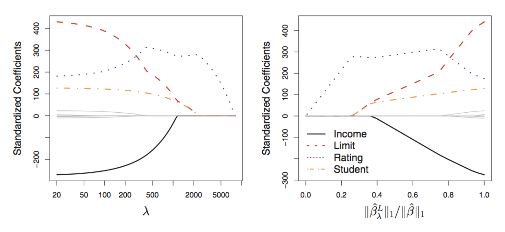
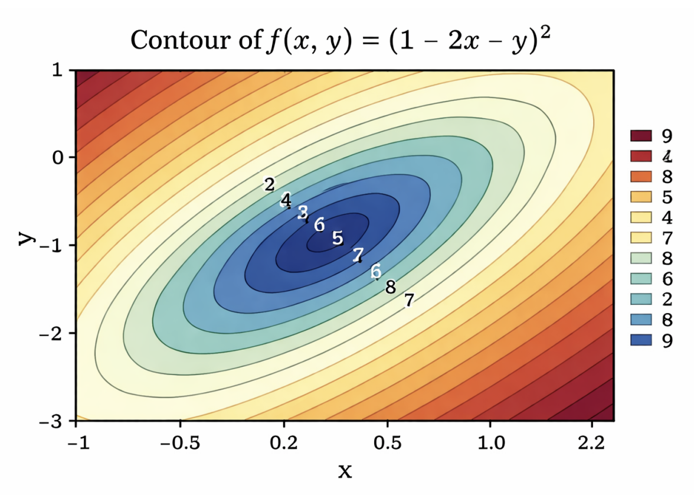
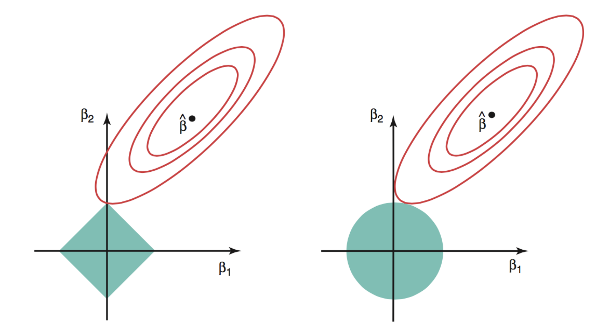
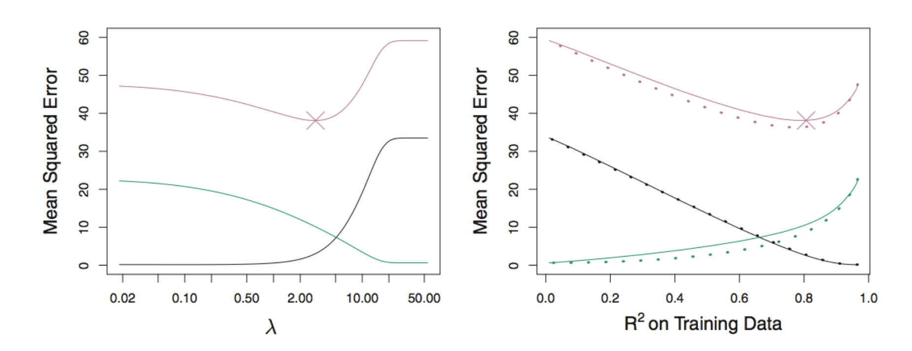
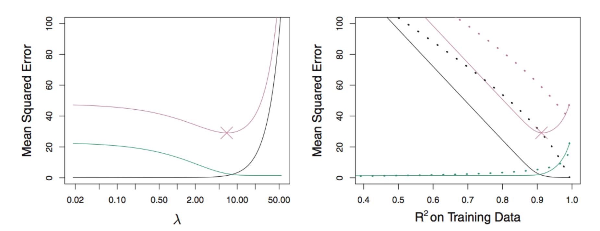
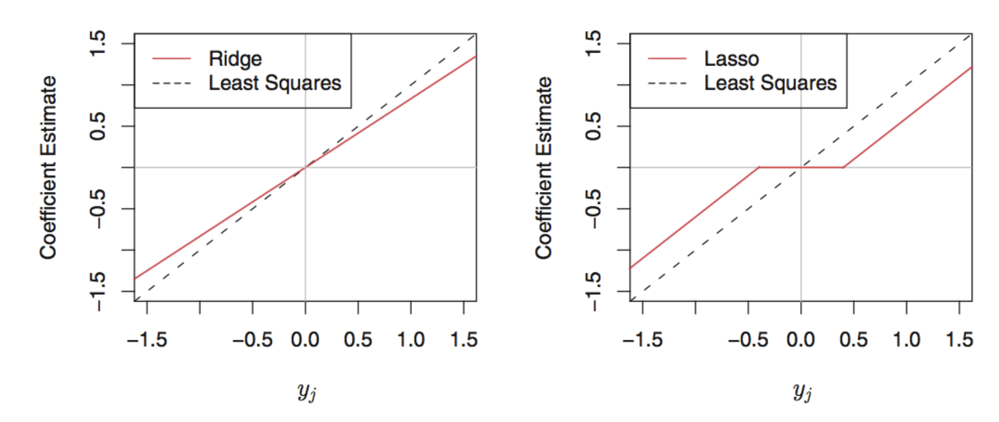
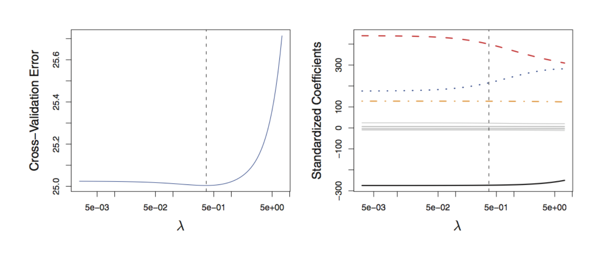

Week 3
To assess models and aid with model selection, we can use the following approaches:
Data Splitting
Training Error Adjustment
Best subset selection
Stepwise subset selection
Can we obtain a simpler, more stable model without searching over subsets?
Yes: shrinkage methods.
By the end of this week, you should be able to:
We can fit a model containing all \(p\) predictors while constraining or regularizing the coefficient estimates by shrinking the coefficient estimates towards zero.
Shrinkage can substantially reduce the variance of the fitted model.
The two best known techniques for shrinking the regression coefficients towards zero are the ridge regression and the lasso
Recall that the OLS fitting procedure estimates \(\beta_0,\ldots,\beta_p\) using the values that minimize
\[ \frac{1}{n}\sum_{i=1}^{n} \left(y_i-\beta_0-\sum_{j=1}^{p}\beta_jx_{ij}\right)^2. \]
Ridge regression instead estimates \(\beta_0,\ldots,\beta_p\) using that values that minimize
\[ \frac{1}{n}\sum_{i=1}^{n} \left(y_i-\beta_0-\sum_{j=1}^{p}\beta_jx_{ij}\right)^2 +\lambda\sum_{j=1}^{p}\beta_j^2, \]
where \(\lambda\geq 0\) is a tuning (regularization) parameter, to be determined later.
\[ \widehat{\boldsymbol\beta}^{\,R}_{\lambda} =\underset{\beta_0,\ldots,\beta_p}{\operatorname{argmin}} \left\{ \underbrace{\frac{1}{n}\sum_{i=1}^{n} \left(y_i-\beta_0-\sum_{j=1}^{p}\beta_jx_{ij}\right)^2}_{\text{RSS}} + \underbrace{\lambda\sum_{j=1}^{p}\beta_j^2}_{\text{shrinkage penalty}} \right\}. \]
What happens when \(\lambda=0\)?
What happens as \(\lambda\) increases?
Selecting a good value for \(\lambda\) is critical
Cross-validation could be used to select \(\lambda\)
In practice, we recommend the standardized predictors for ridge regression since the penalty depends on the scale of each predictor.
We can use the formula
\[\tilde{x}_{ij} = \frac{x_{ij}}{\sqrt{\frac{1}{n}\sum_{i=1}^n (x_{ij}-\bar{x}_j)^2}}\]
All standardized predictors have standard deviation equal to one.

*Left Panel: each curve corresponds to the ridge regression coefficient estimate for one of the 10 variables, plotted as a function of \(\lambda\)
Right Panel: same ridge coefficient estimates, but we now display \(||\widehat{\beta}_{\lambda}^R||_2/||\widehat{\beta}||_2\), where \(\widehat{\beta}\) denotes the OLS estimator.

Squared bias (black), variance (green), and the test MSE (purple) for the ridge regression. The dashed lines indicate the smallest possible MSE.
Ridge regression improves over OLS in terms of MSE
Ridge can predict better than OLS when OLS estimates have high variance. - It reduces variance by accepting some bias.
For a fixed value of \(\lambda\), ridge regression is computationally efficient. - It is much faster than best subset selection when \(p\) is large.
Can ridge regression perform variable selection by setting unimportant coefficients exactly equal to zero?
No. Ridge shrinks coefficients towards zero, but typically retains all \(p\) predictors with nonzero coefficients.
Ridge can improve prediction, but it does not automatically produce a sparse, easily interpreted model.
The lasso penalizes the absolute values of the coefficients.
Specifically, the lasso coefficients, \(\widehat{\mathbf{\beta}}_{\lambda}^L\), minimize the quantity:
\[ \widehat{\boldsymbol\beta}^{\,L}_{\lambda} =\underset{\beta_0,\ldots,\beta_p}{\operatorname{argmin}} \left\{ \frac{1}{n}\sum_{i=1}^{n} \left(y_i-\beta_0-\sum_{j=1}^{p}\beta_jx_{ij}\right)^2 +\lambda\sum_{j=1}^{p}|\beta_j| \right\}. \]
where \(\lambda \geq 0\) is a tuning parameter, to be determined later.
Like ridge regression, the lasso shrinks coefficient estimates towards zero.
Unlike ridge regression, the lasso can force some coefficients to be exactly zero when \(\lambda\) is sufficiently large.

As the penalty increases, lasso coefficient paths reach exactly zero. This is what enables variable selection.
Why does the lasso produce exact zero estimates, while ridge regression generally does not?
The answer comes from the geometry of the \(\ell_1\) and \(\ell_2\) constraint regions.
The lasso solves
\[ \underset{\beta_0,\ldots,\beta_p}{\operatorname{minimize}} \quad \sum_{i=1}^{n}\left(y_i-\beta_0-\sum_{j=1}^{p}\beta_jx_{ij}\right)^2 \quad\text{subject to}\quad \sum_{j=1}^{p}|\beta_j|\leq s. \]
Ridge regression solves
\[ \underset{\beta_0,\ldots,\beta_p}{\operatorname{minimize}} \quad \sum_{i=1}^{n}\left(y_i-\beta_0-\sum_{j=1}^{p}\beta_jx_{ij}\right)^2 \quad\text{subject to}\quad \sum_{j=1}^{p}\beta_j^2\leq s. \]
Here, \(s\geq 0\) is related to the penalty parameter \(\lambda\).
Consider the loss function \(L(\beta_1,\beta_2)=\sum_{i=1}^{n}(y_i-x_{i1}\beta_1-x_{i2}\beta_2)^2.\)

Each contour contains coefficient pairs with the same RSS. The centre is the OLS solution.

The lasso constraint has corners on the axes. An RSS contour often first touches the diamond at a corner, making one coefficient exactly zero. The ridge constraint is smooth, so its solution rarely lies exactly on an axis.
The lasso’s ability to produce a sparse model is a major advantage when interpretability matters.
But which method predicts better?
That depends on the structure of the true signal.

When many true coefficients are nonzero, ridge and lasso can have similar bias, while ridge may achieve lower variance and lower test MSE.

When only a small number of predictors truly matter, the lasso can outperform ridge by attaining both lower bias and lower variance.
Assume that \(n=p\), \(\mathbf X=\mathbf I_n\), and the intercept is fixed at \(\beta_0=0\).
Then
\[ \begin{bmatrix} y_1\\ \vdots\\ y_p \end{bmatrix} = \begin{bmatrix} \beta_1\\ \vdots\\ \beta_p \end{bmatrix} + \begin{bmatrix} \varepsilon_1\\ \vdots\\ \varepsilon_p \end{bmatrix}, \]
where
\[ \mathbb E(\varepsilon_j)=0, \qquad \operatorname{Var}(\varepsilon_j)=\sigma^2, \qquad j=1,\ldots,p. \]
OLS minimizes
\[ \sum_{j=1}^{p}(y_j-\beta_j)^2. \]
Therefore,
\[ \widehat\beta_j=y_j, \qquad j=1,\ldots,p. \]
How do we get this?
Ridge regression minimizes
\[ \sum_{j=1}^{p}(y_j-\beta_j)^2 +\lambda\sum_{j=1}^{p}\beta_j^2. \]
This leads to the ridge estimator
\[ \widehat\beta_j^{\,R}=\frac{y_j}{1+\lambda}, \qquad j=1,\ldots,p. \]
Since \(\lambda\geq 0\), every estimated coefficient is shrunk towards zero.
The lasso minimizes
\[ \sum_{j=1}^{p}(y_j-\beta_j)^2 +\lambda\sum_{j=1}^{p}|\beta_j|. \]
This gives estimator
\[ \widehat\beta_j^{\,L} = \begin{cases} y_j-\lambda/2, & y_j>\lambda/2,\\ 0, & |y_j|\leq\lambda/2,\\ y_j+\lambda/2, & y_j<-\lambda/2. \end{cases} \]
The estimated coefficients from Lasso are also shrunk. The above shrinkage is known as the soft-thresholding

Ridge shrinks continuously. The lasso applies a threshold and creates an interval of exact zeros.
Recall that \(y_j=\beta_j+\varepsilon_j\) and \(\widehat\beta_j=y_j\).
Bias:
\[ \mathbb E(\widehat\beta_j) =\mathbb E(y_j) =\beta_j. \]
Variance:
\[ \operatorname{Var}(\widehat\beta_j) =\operatorname{Var}(\varepsilon_j) =\sigma^2. \]
Thus, the OLS estimator is unbiased in this example.
For the \(j\)th coefficient,
\[ \begin{aligned} \mathbb E\left[(\widehat\beta_j-\beta_j)^2\right] &=\left\{\mathbb E(\widehat\beta_j)-\beta_j\right\}^2 +\operatorname{Var}(\widehat\beta_j)\\ &=\sigma^2. \end{aligned} \]
Across all \(p\) coefficients,
\[ \mathbb E\left[\sum_{j=1}^{p}(\widehat\beta_j-\beta_j)^2\right] =p\sigma^2. \]
Recall that
\[ \widehat\beta_j^{\,R}=\frac{y_j}{1+\lambda} =\frac{\beta_j+\varepsilon_j}{1+\lambda}. \]
Expected value and bias:
\[ \mathbb E(\widehat\beta_j^{\,R})=\frac{\beta_j}{1+\lambda}, \qquad \operatorname{Bias}(\widehat\beta_j^{\,R}) =-\frac{\lambda\beta_j}{1+\lambda}. \]
Variance:
\[ \operatorname{Var}(\widehat\beta_j^{\,R}) =\frac{\sigma^2}{(1+\lambda)^2}. \]
For the \(j\)th coefficient,
\[ \begin{aligned} \mathbb E\left[(\widehat\beta_j^{\,R}-\beta_j)^2\right] &=\operatorname{Bias}(\widehat\beta_j^{\,R})^2 +\operatorname{Var}(\widehat\beta_j^{\,R})\\ &=\frac{\lambda^2\beta_j^2}{(1+\lambda)^2} +\frac{\sigma^2}{(1+\lambda)^2}. \end{aligned} \]
Across all \(p\) coefficients,
\[ \mathbb E\left[\sum_{j=1}^{p}(\widehat\beta_j^{\,R}-\beta_j)^2\right] =\frac{\lambda^2}{(1+\lambda)^2}\sum_{j=1}^{p}\beta_j^2 +\frac{p\sigma^2}{(1+\lambda)^2}. \]
Ridge adds bias but reduces variance. The best \(\lambda\) balances these two effects.
Algorithm: Choosing the regularization parameter, \(\lambda\)

Cross-validation estimates predictive performance across a sequence of candidate values for \(\lambda\).
The elastic net combines \(\ell_1\) and squared \(\ell_2\) penalties:
\[ \underset{\boldsymbol\beta}{\operatorname{minimize}} \quad \|\mathbf y-\mathbf X\boldsymbol\beta\|_2^2 +\lambda\left[(1-\alpha)\|\boldsymbol\beta\|_1 +\alpha\|\boldsymbol\beta\|_2^2\right], \]
where \(\lambda\geq 0\) and \(\alpha\in[0,1]\).
Suppose we model nonlinear effects using
\[
Y=\beta_0+\beta_1X_1+\beta_2X_1^2
+\beta_3X_2+\beta_4X_2^2+\varepsilon.
\]
The group lasso may minimize
\[ \|\mathbf y-\mathbf X\boldsymbol\beta\|_2^2 +\lambda\left( \sqrt{\beta_1^2+\beta_2^2} +\sqrt{\beta_3^2+\beta_4^2} \right). \]
Here, the linear and quadratic terms for each predictor form a group. A whole group can be set to zero simultaneously.
There are many more penalties out there!!!
Ridge and lasso are not restricted to linear regression. More generally,
\[ \widehat{\boldsymbol\beta}_{\lambda} =\underset{\boldsymbol\beta}{\operatorname{argmin}} \left\{ L(\boldsymbol\beta;D^{\mathrm{train}}) +\lambda\,\operatorname{Pen}(\boldsymbol\beta) \right\}. \]
The loss and penalty can be adapted to many other modelling settings.
we covered model selection for a linear model, these are alternatives to OLS
subset selection
shrinkage/regularization
We gave a simple motivating example last week where we compared two linear models
Now, what we want to do is fit a model but decide which features should be included for the best fit.
We will use a variety of methods to compare.
We will be using the Hitters dataset from the ISLR2 package (the package corresponding to our textbook).
We want to answer the following question:
Which variables should we include in the model to predict a baseball player’s salary?
Before we start the example, just be looking at the dataset what model selection techniques might you consider? Subset selection vs. Shrinkage? Then which methods between those might be better than others?
We are going to try two methods and see what happens.
We start with Subset Selection, and here, we will do forward stepwise selection
We used the BIC as our training error adjustment, what are some other methods we could have used? When does it make sense to use BIC?
Our optimal model via best subset selection has the following coefficient estimates:
What do we know about forward stepwise selection?
The Lasso is another way to do variable selection.
We can use the glmnet package to apply the Lasso and answer our question.
So.. how do we choose \(\lambda\)?
We will use cross validation to compare error across the lasso using a grid of \(\lambda\) values.
We can specify this grid ourselves, or use the default in the cv.glmnet() function (which we will do).
The resulting coefficients are:
Now, we have two different models. They chose a different number of predictors to include, with different coefficients.
Can we compare these directly? Which one is better? What steps can I take to determine the better model?
Next Week: Moving Beyond Linearity Assignment: Available on course website, due October 7th
Comments
\[ \widehat{\boldsymbol\beta}^{\,R}_{\lambda} =\underset{\beta_0,\ldots,\beta_p}{\operatorname{argmin}} \left\{ \underbrace{\frac{1}{n}\sum_{i=1}^{n} \left(y_i-\beta_0-\sum_{j=1}^{p}\beta_jx_{ij}\right)^2}_{\text{RSS}} + \underbrace{\lambda\sum_{j=1}^{p}\beta_j^2}_{\text{shrinkage penalty}} \right\}. \]
\(\lambda\) controls the balance between fitting the training data and shrinking the coefficients.